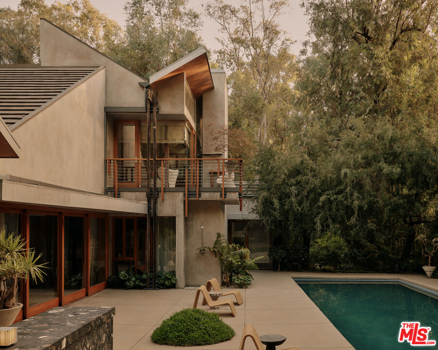
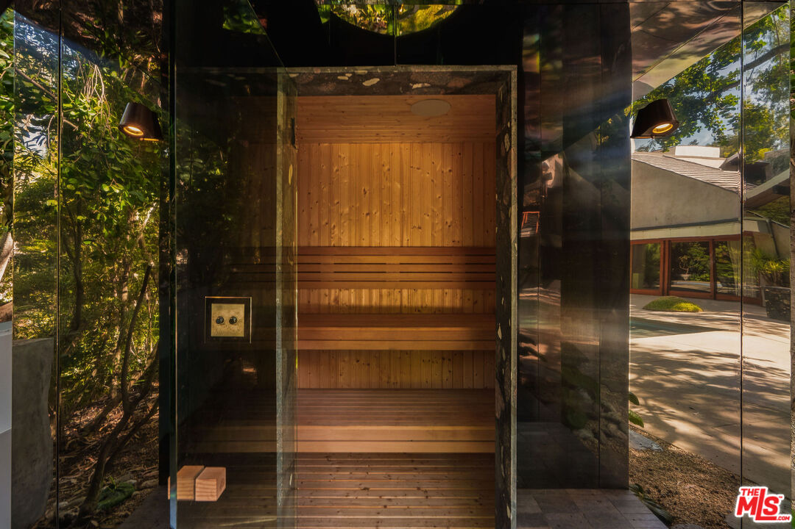
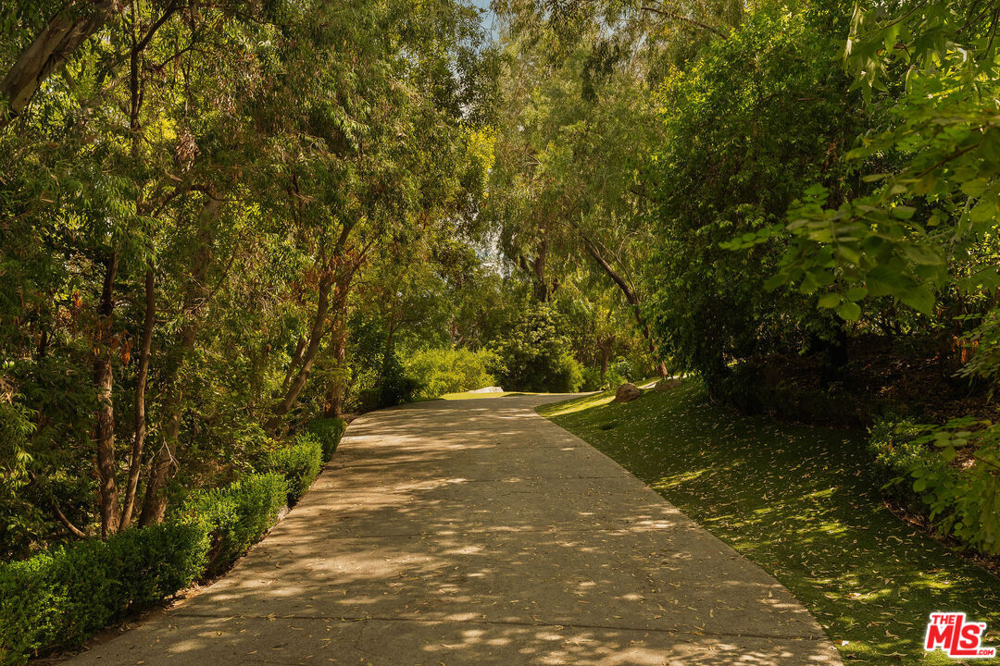
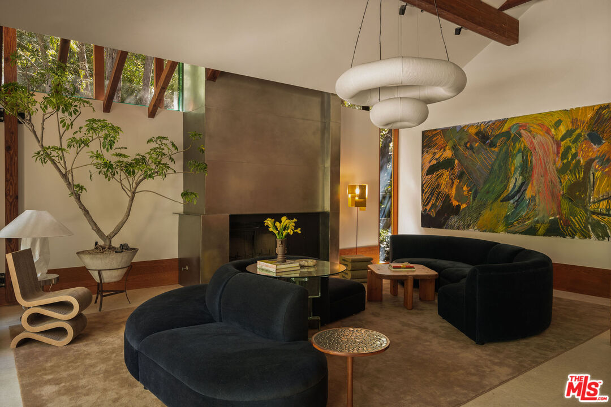

Obsession No. 017West Hollywood · Los Angeles
7728 Woodrow Wilson Dr
There's a mirrored sauna tucked into the garden here, built so it reflects the trees around it and basically disappears into the landscape, and that's just one room in this one.
Why it made the edit
“A mirrored sauna tucked into the garden reflects the trees around it and basically disappears into the landscape.”
This one made the list for the sauna, of all things, mirrored on every side so it catches the trees and the light around it and basically vanishes into the garden instead of announcing itself the way a spa feature usually does.
It sits up in Upper Nichols Canyon on what people up there still call Celebrity Row, gated behind an automated driveway on just over an acre, and the house itself was originally designed by architect Jeffrey Mills in 1997, then completely reimagined by OME DEZIN into this balance of California modernism, restrained Brutalism, and the kind of warmth you'd expect from a French country home instead of the Hollywood Hills.
Timber, concrete, glass and stone throughout, soaring ceilings, walls of glass that pull the whole hillside inside, and a great room that opens straight onto the gardens and the pool.
The kitchen has a La Cornue range and its own pizza oven, which tells you exactly what kind of entertaining this house is built for, and the primary suite upstairs is its own event, vaulted ceilings, a fireplace, a corner terrace, and a bathroom with a freestanding marble tub sitting dead center in the room like a sculpture.
Four bedrooms and five and a half baths across 4,910 square feet, plus a screening room, a gym, a fire-pit lounge, a stepped waterfall, and gated parking for up to ten cars, on a lot moments from Hollywood and West Hollywood but that feels like its own private world once the gate closes behind you. Listed at $14,000,000. If a house that disappears into its own landscape is your kind of obsession too, I've got you.



Want to see it in person?
Curious about this one?
Let’s talk.
Listed by Charles Derenne, Sotheby's International Realty. House of Zonshine does not represent this listing. Property details are from listing information and public sources and should be independently verified.